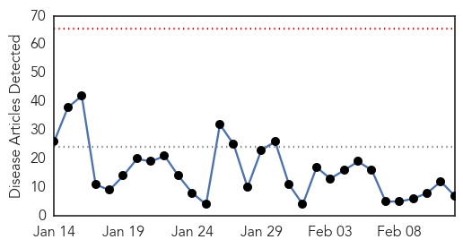
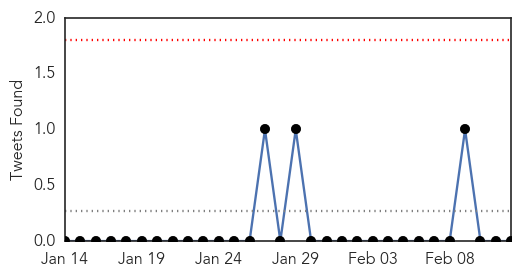
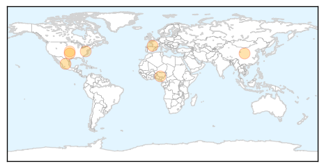
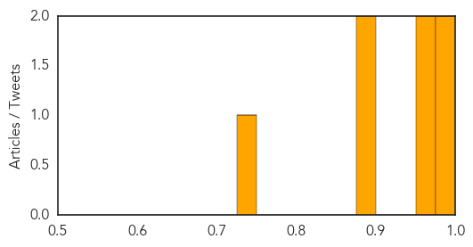
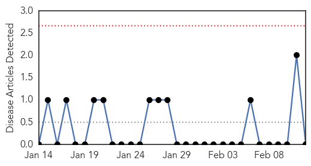

Influenza
30-Day Web Trend
0 alerts, 0 warnings

30-Day Twitter Trend
0 alerts, 0 warnings

Article Locations
Article Confidences
Top Articles:
- 0.995
- New flu deaths in Tulsa County; local clinics seeing more cases
- 0.988
- A century ago, flu ravaged Pendleton
- 0.974
- France in grip of flu epidemic as vaccine proves ineffective
- 0.968
- Animal health officials rush to curb spread of bird flu virus
- 0.889
- Nigeria to eradicate bird flu soon: official
- 0.883
- Stomach bug strikes Accomack schools
- 0.739
- Italian Court Rules Vaccines Really Do Cause Autism
Top Tweets:
-
No tweets found for Feb 12, 2015
Mold/Fungal
30-Day Web Trend
0 alerts, 0 warnings

30-Day Twitter Trend
0 alerts, 0 warnings

Article Locations

Article Confidences

Top Articles:
-
No articles found for Feb 12, 2015
Top Tweets:
-
No tweets found for Feb 12, 2015